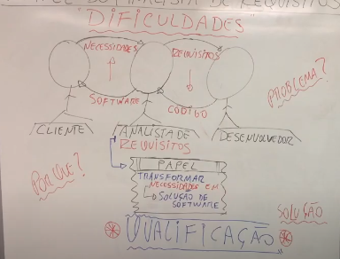
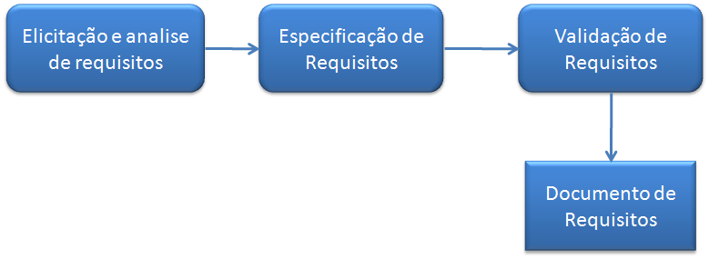

<!DOCTYPE HTML>
<html lang="" >
    <head>
        <meta charset="UTF-8">
        <title>Requisitos de Software · HonKit</title>
        <meta http-equiv="X-UA-Compatible" content="IE=edge" />
        <meta name="description" content="">
        <meta name="generator" content="HonKit 3.7.1">
        
        
        
    
    <link rel="stylesheet" href="../gitbook/style.css">

    
            
                
                <link rel="stylesheet" href="../gitbook/gitbook-plugin-highlight/website.css">
                
            
                
                <link rel="stylesheet" href="../gitbook/gitbook-plugin-search/search.css">
                
            
                
                <link rel="stylesheet" href="../gitbook/gitbook-plugin-fontsettings/website.css">
                
            
        

    

    
        
    
        
    
        
    
        
    
        
    
        
    

        
    
    
    <meta name="HandheldFriendly" content="true"/>
    <meta name="viewport" content="width=device-width, initial-scale=1, user-scalable=no">
    <meta name="apple-mobile-web-app-capable" content="yes">
    <meta name="apple-mobile-web-app-status-bar-style" content="black">
    <link rel="apple-touch-icon-precomposed" sizes="152x152" href="../gitbook/images/apple-touch-icon-precomposed-152.png">
    <link rel="shortcut icon" href="../gitbook/images/favicon.ico" type="image/x-icon">

    
    <link rel="next" href="04desigdesoftwareP1.html" />
    
    
    <link rel="prev" href="02projetodosite.html" />
    

    </head>
    <body>
        
<div class="book honkit-cloak">
    <div class="book-summary">
        
            
<div id="book-search-input" role="search">
    <input type="text" placeholder="Type to search" />
</div>

            
                <nav role="navigation">
                


<ul class="summary">
    
    

    

    
        
        
    
        <li class="chapter " data-level="1.1" data-path="../">
            
                <a href="../">
            
                    
                    Introdução
            
                </a>
            

            
        </li>
    
        <li class="chapter " data-level="1.2" data-path="../roadmap/processo.html">
            
                <a href="../roadmap/processo.html">
            
                    
                    Processo de Desenvolvimento
            
                </a>
            

            
        </li>
    
        <li class="chapter " data-level="1.3" data-path="../roadmap/roadmap.html">
            
                <a href="../roadmap/roadmap.html">
            
                    
                    Roadmap
            
                </a>
            

            
        </li>
    

    
        
        <li class="header">Etapa 1 - Website (nível iniciante)</li>
        
        
    
        <li class="chapter " data-level="2.1" data-path="01introducaoacodificacao.html">
            
                <a href="01introducaoacodificacao.html">
            
                    
                    Introdução a Codificação
            
                </a>
            

            
        </li>
    
        <li class="chapter " data-level="2.2" data-path="02projetodosite.html">
            
                <a href="02projetodosite.html">
            
                    
                    Projeto de desenvolvimento de um website: Portifólio
            
                </a>
            

            
        </li>
    
        <li class="chapter active" data-level="2.3" data-path="03requisitodesoftwareP1.html">
            
                <a href="03requisitodesoftwareP1.html">
            
                    
                    Requisitos de Software
            
                </a>
            

            
        </li>
    
        <li class="chapter " data-level="2.4" data-path="04desigdesoftwareP1.html">
            
                <a href="04desigdesoftwareP1.html">
            
                    
                    Design de Software
            
                </a>
            

            
        </li>
    
        <li class="chapter " data-level="2.5" data-path="05contrucaodesoftwareP1.html">
            
                <a href="05contrucaodesoftwareP1.html">
            
                    
                    Construção de Software
            
                </a>
            

            
        </li>
    
        <li class="chapter " data-level="2.6" data-path="06testedesoftwareP1.html">
            
                <a href="06testedesoftwareP1.html">
            
                    
                    Teste de Software
            
                </a>
            

            
        </li>
    

    
        
        <li class="divider"></li>
        
        
    
        <li class="chapter " data-level="3.1" data-path="../misc/autor.html">
            
                <a href="../misc/autor.html">
            
                    
                    Autor
            
                </a>
            

            
        </li>
    

    

    <li class="divider"></li>

    <li>
        <a href="https://github.com/honkit/honkit" target="blank" class="gitbook-link">
            Published with HonKit
        </a>
    </li>
</ul>


                </nav>
            
        
    </div>

    <div class="book-body">
        
            <div class="body-inner">
                
                    

<div class="book-header" role="navigation">
    

    <!-- Title -->
    <h1>
        <i class="fa fa-circle-o-notch fa-spin"></i>
        <a href=".." >Requisitos de Software</a>
    </h1>
</div>


                    <div class="page-wrapper" tabindex="-1" role="main">
                        <div class="page-inner">
                            
<div id="book-search-results">
    <div class="search-noresults">
    
                                <section class="normal markdown-section">
                                
                                <h1 id="requisitos-de-software">Requisitos de Software</h1>
<p>Antes de mais nada, o que é “Requisito de Software”?</p>
<p>Os requisitos de software expressam as necessidades e
restrições impostas a um produto de software que
contribuir para a solução de alguns problemas do mundo real
problema.</p>
<p>A área de conhecimento de Requisitos de Software
preocupa-se com a elicitação, análise,
identificação e validação de requisitos de software
bem como o gerenciamento de requisitos durante
todo o ciclo de vida do produto de software.</p>
<p>Seja em qualquer projeto bons requisitos proporcionam o desenvolvimento de um sistema mais claro, coeso e mais próximo de alcançar a satisfação do cliente dentro do orçamento e prazo acordados.</p>
<p>O responsável para a gerencimaneto dos requisitos normalmente é analista de requisitos ou o engenherio de requisitos, podendo ser outro profissional que entenda o processo de requisito.</p>
<p>Primeiramente precisamos entender que dentro do processo de desenvolvimento de software temos 3 papéis envolvidos: o cliente, o analista de requisitos e o desenvolvedor.</p>
<p></p>
<p>O <strong>cliente</strong> passa as suas necessidades.</p>
<p>O <strong>analista de requisitos</strong> converter as necessidades em requisitos de softwares.</p>
<p>O <strong>desenvolvedor</strong> converter isso em um código, usando linguagem de programação.</p>
<p>O conjunto de requisitos e o código geram um softwares que atende as necessidades que foram identificados pelo analista de requisitos.</p>
<p><strong>Qual cuidado que indentificamos aqui neste processo?</strong></p>
<p>É definir quais as melhores práticas (técnica, ferramentas, métodos e procedimentos) utilizados pelo analista de requisitos para traduzir as necessidades do negócio (cliente) em requisitos de software que seja claro para os desenvolvedores codificarem.</p>
<p>Mas então como escrever requisitos de software de forma simples e garantir o mínimo de erros no sistema ?</p>
<p>Inicialmente identificamos o(s) problema(s)(uma breve descrição)a resolver e os envolvidos no sistema, também conhecidos como stakeholders.</p>
<h2 id="aprofundando-o-conhecimento">Aprofundando o conhecimento:</h2>
<p>Para sabermos sobre engenharia de requisitos precisamos entender o que é enegenharia de requisitos, quais são a divisões(atividades) da engenharia de requisitos e os desafios de cada atividade de quem está trabalhando nesta área.</p>
<p>O que é Engenharia de Requisitos?</p>
<p>A Engenharia de Requisitos é uma subárea da engenharia de software que vai cuidar de todo o ciclo de vida do requisitos, desde do nascimento até o momento que é desenvolvido, é verificado e está no produto.</p>
<p>O levantamento de requisitos tem características diferentes, desafios diferentes para cada tipo de produto. Um produto feito por encomenda se torna mais fácil o levantamento das necessidades do cliente, usuários, regras de negócios, processos. Contudo um produto focado no mercado não tem exatamente quem demandou o serviço, exigi uma maior dificuldade em obter as regras bem definidas, necessitando um estudo aprofundado do mercado. A forma de abordagem neste dois casos são diferentes. Veremos que existe um desafio diferente para cada tipo de produto e para cada tipo de projeto(web, desktop...).</p>
<p>Qual o processo de Engenharia de Requisitos?
</p>
<p><a href="https://medium.com/lfdev-blog/como-escrever-requisitos-de-software-de-forma-simples-e-garantir-o-m%C3%ADnimo-de-erros-no-sistema-app-74df2ee241cc" target="_blank">https://medium.com/lfdev-blog/como-escrever-requisitos-de-software-de-forma-simples-e-garantir-o-m%C3%ADnimo-de-erros-no-sistema-app-74df2ee241cc</a></p>
<p><a href="https://www.ateomomento.com.br/requisitos-de-software/" target="_blank">https://www.ateomomento.com.br/requisitos-de-software/</a></p>
<p>Idenpendente do tipo de produto ou de projeto, podemos dividir as atividades em:
viabilidade
Elicitação (levantamento de requisitos ou descoberta)
análise
especificação
validação.</p>
<p><strong>Elicitação de Requisitos</strong></p>
<p>O processo é iniciado com a elicitação dos dados, efetua a captura, descoberta e aquisição dos requisitos de software pelo engenheiro de software ou analista. Identifica as fontes dos requisitos e define as técnicas para extraí-los. Iremos aqui enetender o problema, propor soluções que são coletados mediante entrevistas, documentos, reuniões, workshops, prototipagem e etc.. Num projeto encomendado direcionamos as entrevista, questionários para pessoas chave, já num projeto de mercado precisamos fazer workshop com clientes, ouvir o setor de suporte e comercial para levantar as necessidades do cliente.
É o primeiro estágio para o entendimento do problema disposto.</p>
<p><strong>Análise de Requisitos</strong></p>
<p>É o momento de verificar quais requisitos fazem ou não sentidos, quais são os prioritários, eliminar requisitos conflitantes e duplicados, classificá-los (definir quais são requisitos funcionais ou não funcionais), descobrir as fronteiras do software.</p>
<p><strong>Especificação de Requisitos</strong></p>
<p>A principal atividade desta fase é escrever, documentar, registrar, confeccionar a documentação de requisitos que descobrimos e analisamos. Diante deste documento podemos sistematicamente revisa-lo, valida-lo e aprova-lo, especificando os componentes de software.
Esse documento poderá ser em história de usuários, casos de uso...
São descritos o passo a passo de cada funcionalidade bem como suas devidas restrições.</p>
<table>
<thead>
<tr>
<th>#UC</th>
<th>Nome UC</th>
<th>Descrição</th>
</tr>
</thead>
<tbody>
<tr>
<td>UC-01</td>
<td>Efetuar login</td>
</tr>
</tbody>
</table>
<p>Está é dividida em três subáreas:</p>
<p> Documentação de definição do sistema: também conhecido como documento de requisitos do usuário, sendo descrito a definição dos requisitos do sistema de
alto nível a partir da perspectiva de domínio. Seus leitores incluem os
representantes dos usuários do sistema (clientes). O documento lista os
requisitos de sistema, juntamente com informações básicas sobre os objetivos
gerais para o sistema, seu ambiente de destino e um mapa de restrições,
premissas e requisitos não-funcionais.
 Especificação dos requisitos do sistema: Neste tópico os requisitos do sistema
são especificados, O detalhamento deste tópico está fora do escopo do guia,
sendo descrito como uma atividade da engenharia de sistemas.
 Especificação dos requisitos do software: estabelece as bases para um acordo
entre os clientes e fornecedores para o produto de software em desenvolvimento,
bem como o que não faz parte do seu escopo. Para o documento de
especificação de requisitos de software é recomendado um documento de
definição de requisitos de software, fornecendo uma base realista para estimar os
custos dos produtos, riscos e cronogramas.</p>
<p>Para a Engenharia de Requisitos, área de conhecimento que estuda os processos de Produção e Gerencia dos requisitos, existem vários tipos de requisitos, porém, vou me ater aos 3 tipos que considero os mais importantes para a construção de um software:</p>
<p>a) Requisitos do Negócio,</p>
<p>b) Requisitos do Usuário e</p>
<p>c) Requisitos de Software.</p>
<p>Vamos descrever o conceito de cada um deles:</p>
<p>1-Requisitos do Negócio: descrevem as necessidades do negocio que o software precisa atender, como por exemplo, prazo, custo, regras, alinhamento com os objetivos estratégicos, etc.</p>
<p>2-Requisitos do Usuário: descrevem as necessidades do usuário do ponto de vista das tarefas a serem realizadas no software, definindo os objetivos geral e específicos, bem como as suas funcionalidades (visão macro dos requisitos).</p>
<p>3-Requisitos de Software: são as ações que o software deve executar, possuindo características e condições próprias, de forma a automatizar uma tarefa de um processo de negócio. Aqui definimos os requisitos funcionais e não funcionais, e, conforme o método IRON, Requisitos de Dados e Regras de Execução.</p>
<p>Os requisitos expressam as necessidades e restrições colocadas sobre o produto de software que contribuem para a solução de algum problema do mundo real. Esta área envolve elicitação, análise, especificação e validação dos requisitos de software[Swebok, 2004].</p>
<p>As principais falhas verificadas em projetos de software são relativas aos
requisitos, devidas as dificuldades no entendimento das necessidades do usuário.
Portanto, realizar corretamente o levantamento e administração de requisitos é essencial
para a qualidade de software [Koscianski e Soares, 2007].</p>
<p>Validação de Requisitos
A documentação de requisitos pode ser objeto de validação. Tal atividade busca
a conformidade do documento com os padrões da organização. Sendo o seu objetivo o
de enumerar todos os problemas antes de alocar recursos para resolver os requisitos.
Esta subárea possui as etapas de:</p>
<p>Revisão dos requisitos: é o meio mais comum de validação. Nesta atividade um
grupo de revisores efetua uma avaliação preliminar de erros, com o
desenvolvimento de checklists 3 de revisão.
Prototipação: prototipagem é normalmente um meio para validar a
interpretação do desenvolvedor sobre os requisitos de software. Neste tópico é
realizado o levantamento da técnica de prototipagem e dos pontos no processo
onde a validação do protótipo pode ser apropriada.
Validação de modelos: este tópico é necessário para validar a qualidade dos
modelos desenvolvidos durante a análise.
Testes de aceitação: é realizado o projeto para os testes dos requisitos de
software para aceitação. Informações adicionais são comentadas na área de
conhecimento Teste de Software.</p>
<p><strong><em>Desenvolvedor de Software</em></strong></p>
<p>os
Leonardo Rodrigues Solar
Engenheiro de Software</p>

                                
                                </section>
                            
    </div>
    <div class="search-results">
        <div class="has-results">
            
            <h1 class="search-results-title"><span class='search-results-count'></span> results matching "<span class='search-query'></span>"</h1>
            <ul class="search-results-list"></ul>
            
        </div>
        <div class="no-results">
            
            <h1 class="search-results-title">No results matching "<span class='search-query'></span>"</h1>
            
        </div>
    </div>
</div>

                        </div>
                    </div>
                
            </div>

            
                
                <a href="02projetodosite.html" class="navigation navigation-prev " aria-label="Previous page: Projeto de desenvolvimento de um website: Portifólio">
                    <i class="fa fa-angle-left"></i>
                </a>
                
                
                <a href="04desigdesoftwareP1.html" class="navigation navigation-next " aria-label="Next page: Design de Software">
                    <i class="fa fa-angle-right"></i>
                </a>
                
            
        
    </div>

    <script>
        var gitbook = gitbook || [];
        gitbook.push(function() {
            gitbook.page.hasChanged({"page":{"title":"Requisitos de Software","level":"2.3","depth":1,"next":{"title":"Design de Software","level":"2.4","depth":1,"path":"etapa1/04desigdesoftwareP1.md","ref":"etapa1/04desigdesoftwareP1.md","articles":[]},"previous":{"title":"Projeto de desenvolvimento de um website: Portifólio","level":"2.2","depth":1,"path":"etapa1/02projetodosite.md","ref":"etapa1/02projetodosite.md","articles":[]},"dir":"ltr"},"config":{"gitbook":"*","theme":"default","variables":{},"plugins":["livereload"],"pluginsConfig":{"livereload":{},"highlight":{},"search":{},"lunr":{"maxIndexSize":1000000,"ignoreSpecialCharacters":false},"fontsettings":{"theme":"white","family":"sans","size":2},"theme-default":{"styles":{"website":"styles/website.css","pdf":"styles/pdf.css","epub":"styles/epub.css","mobi":"styles/mobi.css","ebook":"styles/ebook.css","print":"styles/print.css"},"showLevel":false}},"structure":{"langs":"LANGS.md","readme":"README.md","glossary":"GLOSSARY.md","summary":"SUMMARY.md"},"pdf":{"pageNumbers":true,"fontSize":12,"fontFamily":"Arial","paperSize":"a4","chapterMark":"pagebreak","pageBreaksBefore":"/","margin":{"right":62,"left":62,"top":56,"bottom":56},"embedFonts":false},"styles":{"website":"styles/website.css","pdf":"styles/pdf.css","epub":"styles/epub.css","mobi":"styles/mobi.css","ebook":"styles/ebook.css","print":"styles/print.css"}},"file":{"path":"etapa1/03requisitodesoftwareP1.md","mtime":"2022-03-28T02:11:48.000Z","type":"markdown"},"gitbook":{"version":"3.7.1","time":"2022-03-28T12:16:45.244Z"},"basePath":"..","book":{"language":""}});
        });
    </script>
</div>

        
    <noscript>
        <style>
            .honkit-cloak {
                display: block !important;
            }
        </style>
    </noscript>
    <script>
        // Restore sidebar state as critical path for prevent layout shift
        function __init__getSidebarState(defaultValue){
            var baseKey = "";
            var key = baseKey + ":sidebar";
            try {
                var value = localStorage[key];
                if (value === undefined) {
                    return defaultValue;
                }
                var parsed = JSON.parse(value);
                return parsed == null ? defaultValue : parsed;
            } catch (e) {
                return defaultValue;
            }
        }
        function __init__restoreLastSidebarState() {
            var isMobile = window.matchMedia("(max-width: 600px)").matches;
            if (isMobile) {
                // Init last state if not mobile
                return;
            }
            var sidebarState = __init__getSidebarState(true);
            var book = document.querySelector(".book");
            // Show sidebar if it enabled
            if (sidebarState && book) {
                book.classList.add("without-animation", "with-summary");
            }
        }

        try {
            __init__restoreLastSidebarState();
        } finally {
            var book = document.querySelector(".book");
            book.classList.remove("honkit-cloak");
        }
    </script>
    <script src="../gitbook/gitbook.js"></script>
    <script src="../gitbook/theme.js"></script>
    
        
        <script src="../gitbook/gitbook-plugin-livereload/plugin.js"></script>
        
    
        
        <script src="../gitbook/gitbook-plugin-search/search-engine.js"></script>
        
    
        
        <script src="../gitbook/gitbook-plugin-search/search.js"></script>
        
    
        
        <script src="../gitbook/gitbook-plugin-lunr/lunr.min.js"></script>
        
    
        
        <script src="../gitbook/gitbook-plugin-lunr/search-lunr.js"></script>
        
    
        
        <script src="../gitbook/gitbook-plugin-fontsettings/fontsettings.js"></script>
        
    

    </body>
</html>

